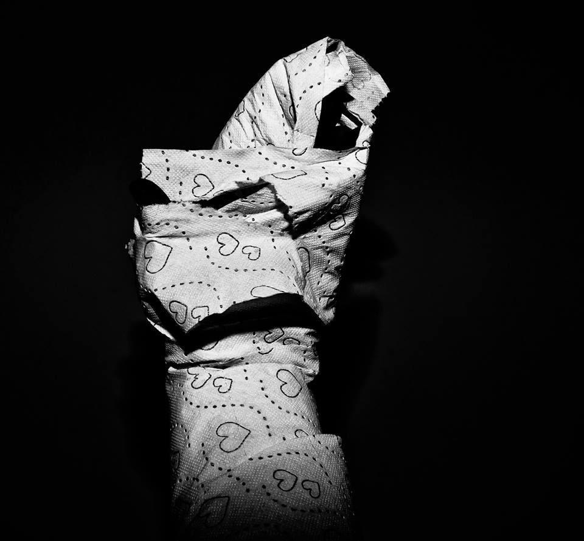

בחירה ברורה, גם כשהלב מסתבך
״שכחת את החגורה שלך פה בכוונה?״ אני רואה את המשפט המנוכר והמיותם הזה מציץ אליי מהפייסבוק כמו עפיפון בלי חוט. מזל שלא שכבנו, אני חושבת לעצמי. ״ממש לא בכוונה״, אני עונה — ואלה חילופי הדברים האחרונים בינינו.
אז הכרתי בחור. מהשנייה הראשונה שראיתי אותו, משהו בו ריגש אותי. המבט שלו הצליח להזיז בי משהו שלא זע חודשים רבים קודם לכן, וזה עוד לפני שהחלפנו מילה. הוא התחיל לדבר איתי בפייסבוק, ומהר מאוד התברר לי שהוא פוסל על הסף כל אפשרות למערכת יחסים. תקופות, אתם יודעים. גם אני הייתי שם.
המוח באותו רגע עובד מהר יותר מהלב, ולפני שאני מספיקה להקשיב לו אני בוחרת Take it על פני Leave it. לא שלא ברור לי שאני מכניסה פה ראש בריא יחסית למיטה שברור שיש בה כדי לעשות אותי חולה. קוראים לזה בדידות.
אנחנו קובעים להיפגש, ואני שומרת על ארשת פוקר דיפלומטית. משחקת את המשחק. הוא לא יודע שלי ברור כשמש שאנחנו עומדים לשכב. הרי לאן זה כבר יכול להתפתח? אני כבר לא בגיל שבו יש טעם לשכנע את עצמי שאני כל כך נפלאה שאולי, דווקא איתי, הוא יסטה מההחלטה שלו ויתאהב כמו באגדות. אני יכולה לשקר לו, אבל לא לעצמי.
וכך קורה שאנחנו שוכבים פעמיים. הסקס, בדיוק כפי שצפיתי, נהדר. הוא ממשיך לרגש אותי כמו שלא ריגשו אותי הרבה זמן.
ארבעה חודשים והודעה אחת
אנחנו נכנסים לפגרה של ארבעה חודשים מכורח הנסיבות, והנה, בשבוע שעבר, הוא צף על פני מימיי הפייסבוק המטונפים. ״מה עם העגילים שלך? תתחילי לשלם עליהם שכירות״, הוא מתבדח. איזה שחקן. העגילים מעניינים לי את ת׳שחלה הימנית, אבל הוא מעניין לי את הלב ואת המוח ועוד כמה איברים, אז אני הולכת לאסוף אותם.
אנחנו משלימים פערים על בירה צוננת. באופן המגשש, הכמעט היתולי, שכל כך אופייני למשחק שלו, הוא לאט־לאט חושף את כוונותיו האמיתיות. לא קורה יותר מדי, ואי אפשר לומר שזה בזכותי. שוב הנסיבות משחקות לטובתי. שוב אלוהים שומר עליי.
יש לי סידורים באזור שלו בבוקר, ולכן ההצעה להישאר לישון באה לי בדיוק בזמן. הוא ממהר להתנצל שהוא עייף ומצטנף בצד שלו, שמא יצטרך להתמודד עם רגע של אינטימיות אמיתית. בבוקר אני קמה ויוצאת לסידורים בבוקסר ובחולצה הגזורה שלו, ששימשו לי פיג׳מה. הבגדים שבאתי איתם לא מתאימים בשום אופן לצהרי אוגוסט תל־אביביים. אני משאירה מאחוריי חגורה — בלי לדעת.

לא אני ששוכחת דברים
עובר יום, עוברים יומיים, והנה המשפט המנוכר והמיותם הזה מציץ אליי מהפייסבוק כמו עפיפון בלי חוט. ״שכחת את החגורה שלך פה בכוונה?״ המשפט הזה מכה בי כמו פטיש אוויר שנוחת חזק על הפדחת וממטיר איתו מטר של אסימונים.
זאת לא אני. אני לא הבחורה הזאת. אני לא שוכחת דברים אצל אנשים כדי שיהיה לי תירוץ לדבר איתם אחר כך. זה לא הסגנון שלי. Hell, אין לי סגנון בכלל. אני פשוט אומרת מה שאני מרגישה וחושבת. סגנון חדשני שנקרא: אמת. אני לא יודעת לשחק. מעולם לא ידעתי.
ברור שלא יצא מזה כלום, וכל רגע שאני מתעכבת שם הוא רגע של אנרגיות מבוזבזות שיכולות להיות מתועלות למטרות שיש בהן כדי להיות מתוגמלת — וברוך השם, לא חסרות לי מטרות כאלה. אז עכשיו, כשווידאתי את זה, אני חורטת לעצמי היטב בראש: יזיזות זה לא משהו שמתאים לי. ואפילו שאני לא אוהבת להכליל, נדמה לי שזה לא מתאים לרבות מאיתנו.
נוסחה קטנה לאהבה עצמית
הנוסחה די פשוטה: אם הוא לא מסעיר אותי ומרעיד את עמודי התווך של הקיום שלי — הוא לא ייגע בי. ואם הוא כן — אני בטוח ארצה יותר.
זה לא שלא ידעתי את זה קודם. אני רואה חברות נופלות בפח הזה פעם אחר פעם וממשיכות לשקר לעצמן רק כדי לא להיות לבד. פשוט, אחרי כל כך הרבה זמן, סוף־סוף מישהו הצליח להזיז בי משהו. סוף־סוף טעמתי על השפתיים את הטעם המשכר והממכר של הכמיהה. עפיץ ומריר, ממש כמו דם טרי.
אסכם ואומר שבדומה לאיש מוכשר שאת הפוסט שלו קראתי היום, גם אני גיבורה. אני מבינה שהוא לא מי שאני רוצה. הוא רק סמל, תמרור בדרך, אם תרצו: תזכורת למה שהיה, סימן למה שעוד יהיה, ובעיקר שיעור באהבה עצמית.
פגשתי בחור — ובדרך פגשתי גם משהו בעצמי.